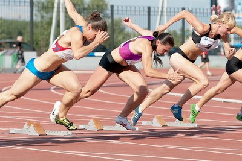

Biegiem. Rodzaje i cechy charakterystyczne. Zasady i techniki. Korzyści zdrowotne
Od czasów starożytnych do dnia dzisiejszego bieganie jest najbardziej powszechnym i dostępnym sportem. Wszystko, czego potrzebujesz do lekcji to pragnienie, odzież sportowa i buty. Ogromna liczba ludzi biega codziennie, aby utrzymać się w dobrej kondycji fizycznej. Ale tylko kilka osób uprawia jogging zawodowo, stawiając sobie zadanie osiągnięcia pewnych rezultatów.
Historia rozwoju
Korzyści z prowadzenia ludzi docenione w starożytności. Z jego pomocą, polował, uciekał przed wrogami i drapieżnikami. Szybkość piechoty była zdeterminowana szybkością poruszania się całej armii.
Pierwszymi oficjalnymi zawodami w biegu były starożytne Igrzyska Olimpijskie, które odbyły się w 776 r. p.n.e. Obejmowały one dystans - 192 m. W ciągu następnych 50 lat opracowano i wykorzystano w igrzyskach 24 Inne dystanse do biegania. Nawet wtedy w Grecji istniały specjalne ćwiczenia do szkolenia biegaczy. A zwycięzcy wyścigów stali się bohaterami narodowymi.
Wraz z końcem starożytności, zawody olimpijskie również się zakończyły. Sport biegowy kontynuował swój rozwój w XVIII wieku.
Przede wszystkim rozprzestrzenił się on na Anglię, gdzie odbywały się regularne starty. W 1837 roku odbył się pierwszy wyścig z przeszkodami, a w 1845 roku rozpoczął się długi dystans.
W 1886 roku odbyły się w Atenach pierwsze Igrzyska Olimpijskie naszych czasów. Oni są st
Inaczej nazywa się to bieganiem na krótkich dystansach. Takie wyścigi są bardzo spektakularne, ponieważ wynik wyścigu jest nie do przewidzenia - czasami pierwszy na mecie może przyjść zawodnik, biegający ostatni.
Główne odległości to 100, 200 i 400 m. Istnieją również specyfikacje: 30 M, 60 i 300.
Wyścigi na głównych dystansach odbywają się w ramach Mistrzostw Świata i Igrzysk Olimpijskich. A specyfikacje (60 i 300 m) są stosowane w Mistrzostwach Europy.
Średnia odległość
Zawiera również podstawowe odległości i dodatki. Pierwszy obejmuje 800 m, 1,5 km, 3 km i drugi - 600 m, 1 km, 2 km, jedną milę.
Steier (długodystansowy)
Jest to pokonanie każdego dystansu dłuższego niż 3 km. do wyścigów do 10 km wykorzystywane są stadiony, a więcej - na autostradzie. Główne odległości to 5 km, 10 km, 42 km 195 m. przez dodatkowe 15 km, 21 km 97,5 m (maraton), 50 km, 100 km (ultramaraton).
